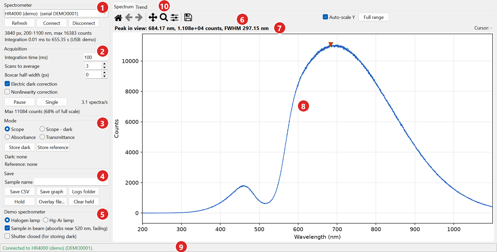
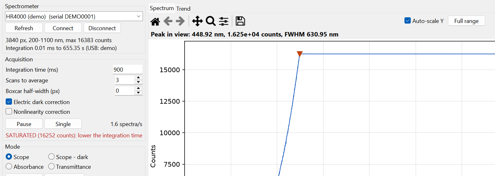
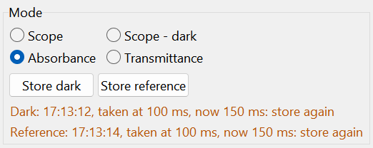
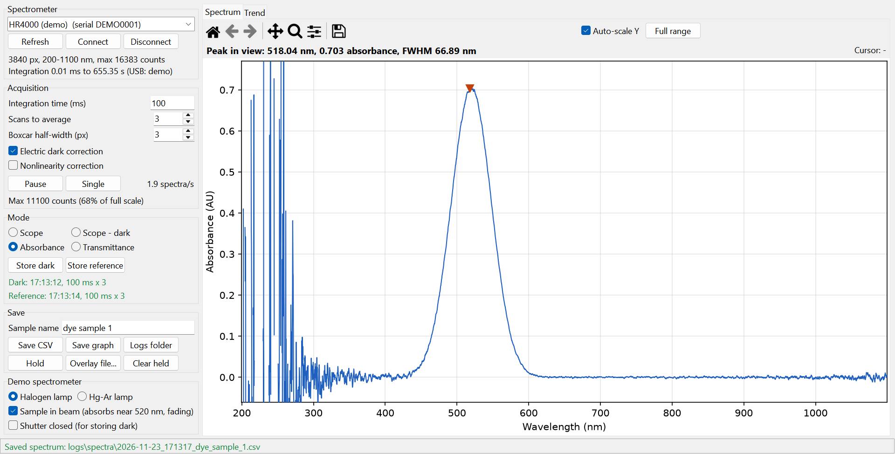
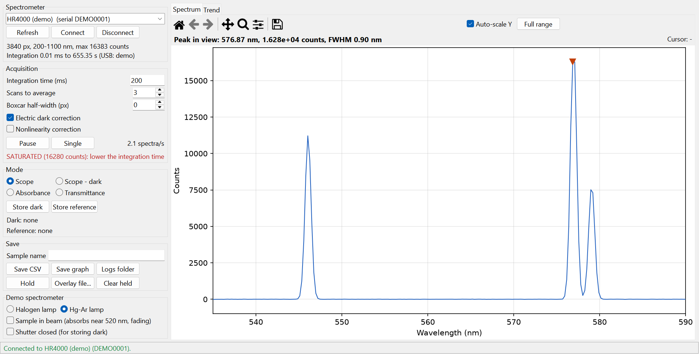
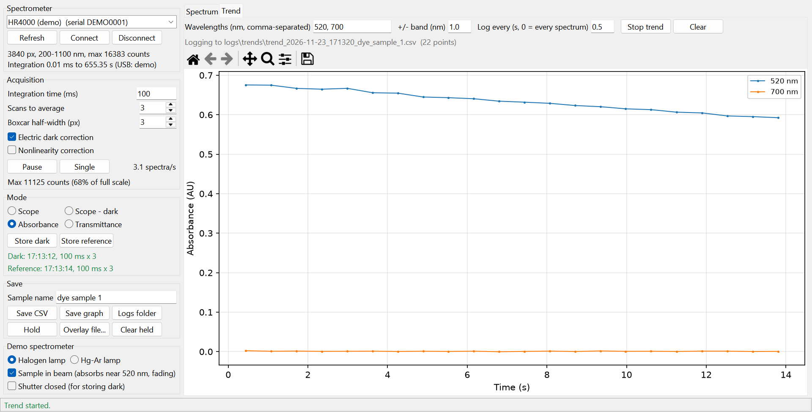

You do not need Ocean's OceanView or SpectraSuite software. If either is installed, close it before using this app, because only one program can use the spectrometer at a time.
Do these steps once per computer, in this order.
py --version. It should print something like Python 3.13.1.Double-click Install requirements.bat in the app folder. It downloads the packages the app uses
(seabreeze, pyusb, libusb-package, numpy, matplotlib), which takes a minute or two.
Wait until it says Done, then press a key to close the window.
Driver package added successfully and
Driver package installed on device: USB\VID_2457&PID_1012.... Press a key to close it.To check, open Device Manager (right-click Start → Device Manager). Under Ocean Optics USB Devices you should see Ocean Optics HR4000 (WinUSB) with no yellow warning triangle.
The driver is Ocean Optics' own package for the HR4000, signed by Microsoft (taken from the python-seabreeze project). It only connects Windows' built-in WinUSB driver to the HR4000. The files are in the driver folder.
Double-click Make desktop shortcut.bat. An Ocean Spectrometer Live icon appears on your desktop.
Double-click Ocean Spectrometer Live (demo).bat. This opens the app with a simulated HR4000, so you can try every button without the instrument. The demo has a halogen or Hg-Ar lamp, a shutter for storing a dark spectrum, and a sample that absorbs near 520 nm and slowly fades, so the Trend tab has something to show. Everything you save in the demo goes into the same logs folder, so you can delete those files afterwards.
If no spectrometer is found, the Spectrometer panel says why and what to do next. See section 12.
The app remembers your settings (integration time, averaging, mode, sample name, trend wavelengths) for next time.

| 1 | Spectrometer: the list of connected spectrometers, with Refresh, Connect and Disconnect, and the details of the connected unit. |
| 2 | Acquisition: integration time, averaging, smoothing, corrections, Pause/Run and Single, the measurement rate, and the signal level / saturation warning (section 5). |
| 3 | Mode: Scope, Scope - dark, Absorbance and Transmittance, plus Store dark and Store reference and their status (section 6). |
| 4 | Save: sample name, Save CSV, Save graph, Logs folder, and Hold / Overlay file / Clear held to compare traces (section 10). |
| 5 | Demo spectrometer: only shown in the demo. Lamp, sample and shutter switches. |
| 6 | Plot toolbar: Home (reset the view), Back/Forward, Pan (hand), Zoom (magnifier: drag a box), plot margins and Save image. To the right, Auto-scale Y keeps the vertical axis fitted to the data, and Full range shows the whole wavelength range again. |
| 7 | Peak in view: wavelength, height and FWHM (full width at half maximum) of the largest peak inside the visible range. Zoom in on a band to measure that band. At the far right, Cursor shows the wavelength and value under the mouse pointer. |
| 8 | Live spectrum. The red triangle marks the peak. |
| 9 | Status bar: messages, including where each file was saved. Errors appear here in red. |
| 10 | Tabs: Spectrum (the live spectrum) and Trend (values over time, section 9). |
| Setting | What it does and how to choose it |
|---|---|
| Integration time (ms) | How long the detector collects light for each spectrum: longer means more signal but slower updates. Aim for the highest point of your spectrum (usually the reference/blank) at 50-85% of full scale. The line under Pause shows "Max N counts (x% of full scale)". It turns orange below 10% (too little light), and red with SATURATED when the detector is full. Type a value and press Enter (or click elsewhere). |
| Scans to average | Averages several spectra into one, which lowers noise by about the square root of the number of scans (4 scans give half the noise). Each displayed spectrum then takes scans × integration time. Typical: 3-10. |
| Boxcar half-width (px) | Smooths each pixel with its neighbours (k pixels on each side). It lowers noise for broad bands but broadens narrow lines, so keep it at 0 when measuring emission lines or FWHM. It affects the display and the processed column of saved files, while the saved raw, dark and reference columns stay unsmoothed. |
| Electric dark correction | Subtracts the average of the detector's covered ("electric dark") pixels from every spectrum. This removes the electronic offset, which drifts with temperature. Recommended: on. |
| Nonlinearity correction | Corrects the detector's slightly non-linear response, using coefficients stored in the spectrometer. Useful for quantitative work when signals vary over a wide range. |
| Pause / Run, Single | Pause stops measuring (Space toggles it). Single takes exactly one spectrum (with averaging) and then pauses. |
| spectra/s | How many averaged spectra per second the spectrometer delivers. The screen refreshes several times a second, however fast that is. |

| Mode | Shows | Needs |
|---|---|---|
| Scope | Raw counts from the detector. | Nothing |
| Scope - dark | Counts minus the stored dark spectrum (S - D). | Dark |
| Absorbance | A = -log10[(S - D) / (R - D)], in absorbance units (AU). | Dark and reference |
| Transmittance | %T = 100 × (S - D) / (R - D). | Dark and reference |
S = current sample spectrum, D = stored dark, R = stored reference (blank).



Checking the wavelength calibration: a mercury-argon (Hg-Ar) calibration lamp has lines at well-known wavelengths, for example Hg 253.65, 365.02, 404.66, 435.83, 546.07, 576.96, 579.07 nm and Ar 696.54, 706.72, 738.40, 763.51, 811.53, 912.30 nm. Each peak should appear within a fraction of a nanometre of these values. The app reads the calibration from the spectrometer and never changes it.
520, 700. The second one shows baseline drift.
elapsed_s. The slope is -k.Everything is saved inside the app folder, in logs. Click Logs folder to open it.
| Folder | What goes there |
|---|---|
| logs\spectra | Save CSV (S): one spectrum per file, named <date>_<time>_<sample name>.csv. |
| logs\graphs | Save graph: a PNG image (150 dpi) of whichever tab is showing, ready for a report. |
| logs\trends | Trend logs (section 9). |
The top lines start with # and record how the spectrum was taken. A table with one row per pixel follows.
This example was saved from the demo spectrometer:
# Saved: 2026-11-23T17:13:17 # Program: Ocean Spectrometer Live # Spectrometer: HR4000 (demo) serial DEMO0001 # USB backend: demo # Spectrum taken: 2026-11-23T17:13:17 # Integration time (ms): 100 # Scans averaged: 3 # Boxcar half-width (px): 3 # Electric dark correction: True # Nonlinearity correction: False # Mode: Absorbance # Sample: dye sample 1 # Dark stored: 2026-11-23T17:13:12, 100 ms x 3 # Reference stored: 2026-11-23T17:13:14, 100 ms x 3 # Note: raw/dark/reference columns are unsmoothed; the last column has the boxcar applied wavelength_nm,raw_counts,dark_counts,reference_counts,Absorbance [Absorbance (AU)] 199.6000,-2.66667,-1.66667,-5.33333, 199.8297,1.66667,-2.33333,4, ... 519.9097,935.333,0.666667,4756.33,0.70819 520.1429,935.667,-4.66667,4765.33,0.707364 ...
Small negative counts are normal with electric dark correction on: it subtracts the electronic offset, leaving only noise where there is no light.
# lines appear as text at the top; select the data columns below them and insert a
Scatter with straight lines chart, with wavelength on X.time,elapsed_s,mode,520nm,700nm 2026-11-23T17:12:05.123,0.512,Absorbance,0.6812,0.0004
These work when the cursor is not in a text box:
| Key | Action |
|---|---|
| Space | Pause / Run |
| D | Store dark |
| R | Store reference |
| S | Save spectrum (CSV) |
| H | Hold the current trace |
| What you see | What to do |
|---|---|
| Nothing happens when you double-click the app. | Run Install requirements.bat again. If the app still does not open,
open Command Prompt in the app folder (type cmd in the Explorer address bar and press Enter) and run py app.py,
which prints the error. |
| A message says some Python packages are not installed. | Run Install requirements.bat (needs internet). |
| "Python was not found" when running Install requirements. | Install Python (setup step 2), making sure "Add python.exe to PATH" is ticked. |
| "Windows protected your PC" or a security warning when opening a .bat file. | Click More info → Run anyway. To avoid this, unblock the zip before extracting it (setup step 1). |
| Spectrometer panel: "No Ocean Optics spectrometer is on USB." | Check the USB cable and the power supply. Try another USB port. Then click Refresh. |
| Spectrometer panel: "Windows sees the HR4000 but has no driver for it." | Run Install HR4000 driver (run once).bat (setup step 4), replug, then click Refresh. |
| The spectrometer vanished right after installing the driver. | Normal: unplug it, wait 5 seconds, plug it back in (and power-cycle it if it has a supply). |
| Spectrometer panel: "Windows has a driver ... but it could not be opened." | Another program is using it. Close OceanView, SpectraSuite, or a second copy of this app, then replug and click Refresh. |
| Status bar (red): "Acquisition stopped: ..." | Usually the USB cable came loose. Replug, click Refresh, then Connect. |
| SATURATED in red. | Lower the integration time, or reduce the light (fiber further away, attenuator, narrower slit). |
| Max counts in orange (under 10% of full scale). | Too little light: raise the integration time, check the fiber connections, and check that the lamp is on and the shutter open. |
| Flat line near zero. | Light is not reaching the spectrometer: shutter closed, fiber unplugged, or lamp off. |
| Absorbance is noisy, negative or drifting. | Store the dark and reference again with the blank in, and check that the reference was not saturated and that the lamp is warmed up. Make sure no light leaked in while storing the dark. |
| Dark/Reference labels are orange ("store again"). | Settings changed after storing them. Store both again. |
| Still no connection after all of the above. | Try the other USB backend: in Command Prompt in the app folder run py app.py --backend pyseabreeze. |
py -m seabreeze.os_setup in Command Prompt (it needs internet and asks for administrator rights), then replug.pnputil /enum-drivers, find the entry with original name
ooi_hr4000.inf, note its published name (for example oem10.inf), and run pnputil /delete-driver oem10.inf /uninstall.| File | Purpose |
|---|---|
| READ ME FIRST.txt | Short setup instructions. |
| Ocean Spectrometer Live - Guide.pdf | This guide. |
| Install requirements.bat | Installs the Python packages (setup step 3). |
| Install HR4000 driver (run once).bat | Installs the USB driver (setup step 4). The driver files are in driver\. |
| Make desktop shortcut.bat | Puts a shortcut on your desktop. |
| Ocean Spectrometer Live.bat | Starts the app. |
| Ocean Spectrometer Live (demo).bat | Starts the app with a simulated HR4000. |
| app.py, spectro.py, acquire.py | The program (Python): window, spectrometer access and calculations, measuring thread. |
| requirements.txt, ocean_live.ico, VERSION.txt | Package list, icon, and the package build date. |
| logs\ (created on first save) | Your saved spectra, graphs and trends. |